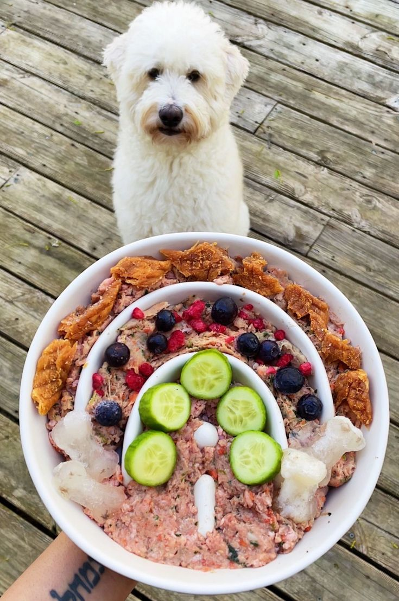

Introduction
Just like humans, pets need a well-balanced diet to stay healthy and active. Many pet owners unknowingly feed their pets unhealthy food, leading to obesity, allergies, or nutritional deficiencies. This guide will help you understand what makes a perfect diet for your furry friend.
1. Key Nutrients Every Pet Needs
🐶 Protein: Essential for muscle growth and overall health. Sources: Chicken, fish, eggs, and turkey.
🐱 Fats: Provide energy and keep the skin and coat healthy. Sources: Fish oil, coconut oil, and animal fats.
🥦 Carbohydrates: Fuel for energy but should be given in moderation. Sources: Rice, sweet potatoes, and oats.
🦴 Vitamins & Minerals: Essential for bone strength, immunity, and digestion. Sources: Leafy greens, pumpkin, and fish.
2. Homemade vs. Store-Bought Food
✅ Homemade Meals: Allows full control over ingredients, but requires careful balance.
❌ Commercial Pet Food: Convenient but may contain preservatives and fillers. Always choose high-quality brands.
3. Common Diet Mistakes to Avoid
⚠️ Overfeeding can lead to obesity. Follow portion guidelines.
⚠️ Avoid excessive treats, as they are often calorie-dense.
⚠️ Keep a consistent meal schedule to avoid digestion problems.